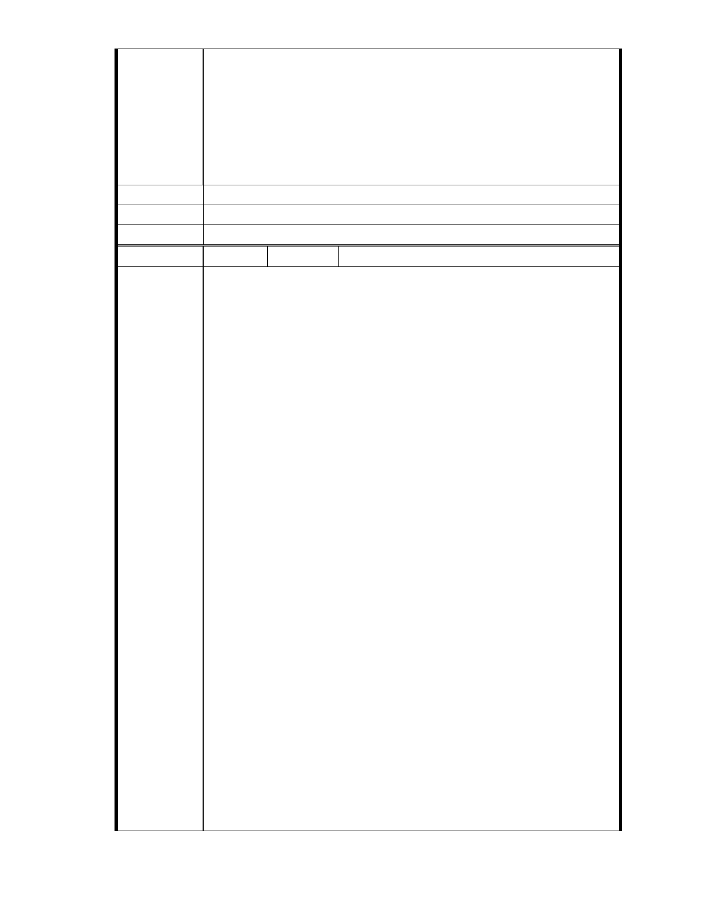

志工園區，一直保持這種破舊樣子，一旦台北一天降下數千毫米大雨，
難道就不淹水嗎?另內湖區若有志工中心，能與全世界的善知識結緣，是
多美好的事及多有福報的地方。我深信慈濟所有的志工皆會用心地建好
自已的家園，不會砸掉自己的金字招牌，所以我贊同此次慈濟規劃案，
讓大湖更美麗，居民生活更有品質。
另開通一條 8 米道路計劃須兼顧大湖山莊社區安全及安寧，建議由車道
改為人行及腳踏車步道，且同意大湖山莊設立門禁管制及監視設備。
建議辦法
市 府 說 明 相關陳情意見將納入本案審查人民意見，依法定程序辦理。
委 員 會 決 議 同編號 1。
編
號 196
陳情人 MA201301030152
支持慈濟內湖園區改善案
慈濟無辜，所有一切都是合法合理的申請。
但對方卻用不合法也不合理的方式集會抗議加抹黑支持慈濟內湖園區改
善案。
說明會 場場舉白布條並在門口大聲吶喊抗議。
會場中恣意叫囂、不遵守會議規則發言不止、是為反對而反對。
他們住著保護區變更的社區、大樓，卻要他人的土地不得變更 甚至回復
50 年前樣貌。
他們知道淹水跟慈濟無關
卻要慈濟負責承諾未來不淹水。
所謂某聯盟一直訴求此塊地原應有多少滞洪量並要求慈濟全面開挖成滞
洪池實在是無理要求。
a.大型滯洪池安全及控管問題繁瑣，慈濟無法以會眾小額所匯聚之善款負
擔。
陳 情 理 由 b.大型滯洪池真是需要，理應由政府另行設置下游居民才無安全顧慮。
(內湖區張區長於 29 日說明會證實大型滯洪池應由政府負責)
對滯洪問題就係爭北基地之右側有一約 4M 巷道左側慈濟又規劃預留 8M
道路，將來政府可徵收設置排水箱涵，慈濟根本就不該多設滯洪池。
慈濟對國家榮譽及國際觀瞻有加分作用，內湖居民與有榮焉，內湖居民
需要慈濟。
慈濟對此塊地處置選項有三(個人分析)
處置方式對居民利弊(以秀湖里、大湖里及內湖普遍居民角度)
a.保留現狀 持續依目前狀況使用，多年問題無法解決。
b.賣出正中反對者下懷，接手者會大舉開發山坡地，大湖及秀湖等居民會
怕過度開發，帶來好山好水遭破壞及其他問題，影響房價及居住品質。
c.可改善提升大湖公園周邊景觀、帶動慈濟人文、慈濟功能可以更完善，
當地居民可以享受園區提供之公共空間、參與慈濟人文提供之教育訓
練、志工活動等，身為內湖居民樂見其成。
- 250 -